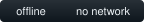
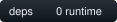
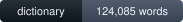
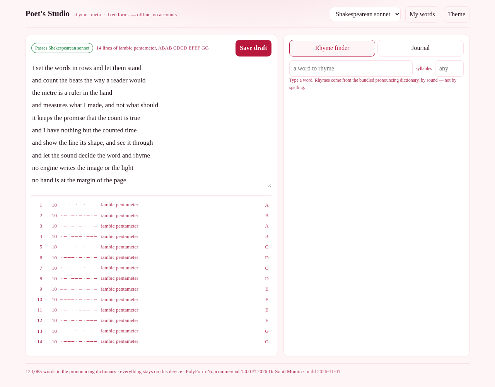

#130 · offline workshop
It measures
what youwrote.
Poet's Studio counts the metre as you type, names the rhyme sound of every line ending, and tells you whether the sonnet you are attempting actually is one. It never writes a line for you.



Three readings
It reads the page, and says what it finds
No suggestions, no autocomplete, no “improve this line”. Three readings, each of which you can check by hand.
day / grey · cat / cot · cat / cap
Rhyme, by sound
Perfect, near and slant rhymes from a pronouncing dictionary — by sound, never by
spelling. though and cough are told apart, and
say rhymes with away.
—·—·—·—·—
Metre, counted
Every line, with its stress pattern as a running bar. The metre is named only when at least 60% of its feet fit; otherwise the pattern is shown and the name is left off.
ABAB CDCD EFEF GG
Forms that check you
Sonnet, blank verse, terza rima, rubaiyat quatrain, haiku, tanka, limerick, ghazal and your own stanza — a live pass or fail, per line, with the reason stated. A rhyme sound spent twice on two different letters is an error, not a flourish.
The workshop itself, in this page
Nothing installed. Nothing uploaded.
The frame below is the real app — the same file the Android build ships — running here with its dictionary already loaded. Press a sample to watch the measure work.

The sample marked one syllable long is deliberately wrong. The app's job is to say so, not to make it right.
Counted, not claimed
The whole dictionary travels inside the file
124,085 words of the CMU Pronouncing Dictionary, re-encoded one phoneme to one character, so the app can rhyme and scan with the network switched off.
What it refuses to do
Three refusals worth keeping
Write the poem
No generator, no prompt box, no suggestion engine. There is nowhere to ask it for a line, because it would not know your line.
Guess at an unknown word
An unknown word is named in the line, counted as one syllable, and the line is marked inexact. A count that is quietly wrong is worse than one that admits it is unsure.
Call an irregular line regular
A metre is named only when enough of its feet fit. Otherwise the pattern is shown and the name is left off — the honest outcome, and the useful one.
Sources and licence
Whose words these are
The dictionary. docs/play/dict.js is a derived work of the
CMU Pronouncing Dictionary (cmusphinx/cmudict), BSD-2-Clause, redistributed here as
source. Entries that are not plain lowercase English words were dropped, one pronunciation
per word was kept, and each phoneme re-encoded as a single character. No entry's
pronunciation was altered. Its licence travels with it in
NOTICE.md.
The engine. Syllables, stress, rhyme keys, metre and the form checks live in
docs/play/poetry.js — one file, no build step, and it runs unchanged in Node,
which is why the tests test the app.
The app. PolyForm Noncommercial 1.0.0 — free for any noncommercial purpose; commercial use needs a licence from the author. See LICENSE.
Your drafts. Kept in this browser, on this device. No account, no sync, no telemetry, and the app makes no network request at any point.
node test-node.js # 113 assertions, no dependencies open docs/play/index.html
Take it with you
Install it, or just open the file
Every build is the same HTML with the same dictionary inside it. Nothing is fetched at first run, because there is nothing left to fetch.
Or open docs/play/index.html from the repository — that
file, beside its five siblings, is the whole app.
On a phone or a desktop browser it also installs itself: a service worker
caches the app once, so afterwards it opens with the network off, from an icon, with no
server involved. And node scripts/build-single.mjs folds the whole thing into
one HTML file you can carry on a stick.